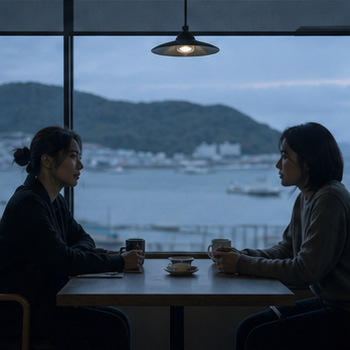
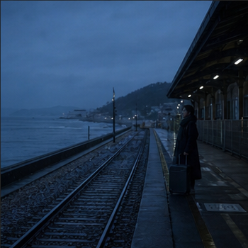
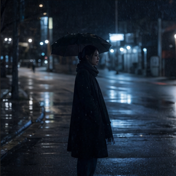
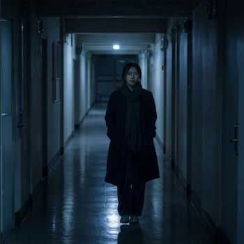
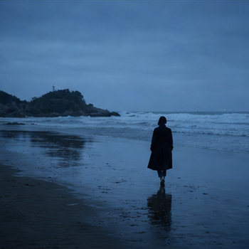

影 正在拉片继续上次进度
《潮汐之后》
正在整理“咖啡馆重逢”段落的人物调度与声音关系。
186镜头
42静帧收藏
9片段收藏
CINEMA PARADISO CORE · ONLINE
DIRECTOR WORKBENCH SYSTEM READY
DIRECTOR OS · WORLD CENTER
欢迎进入世界的中心。选择一条路径，继续你的影像研究。
PERSONAL CINEMA LAB
MY CATEGORIES
分类里的所有影片会在这里集中展示。
你的影片、镜头和导演笔记都在这里。

影 正在拉片正在整理“咖啡馆重逢”段落的人物调度与声音关系。
按最近编辑时间排列

02:04:18剧情长片 · 68%

00:01:36品牌广告 · 已完成

00:18:42剧情短片 · 31%
DIRECTOR'S VISUAL MEMORY
把每一次拉片，变成下一次创作可以调用的视觉记忆。
所有资料都保留原影片与时间码
在拉片工作台选中镜头，停在想保留的画面，再点击“收藏到导演资料库”。
DIRECTOR'S INSPIRATION BOARD
把静帧、片段、图片与文字放进同一个创作语境。
已加入收藏夹的资料会在这里合并展示，同一份资料只出现一次。
可以添加已有资料，或者写下一张新的文字卡片。
镜头 042 · 00:31:18:06
让城市始终在人物身后运转。环境越繁忙，人物的停顿就越明显。
今天 22:18 · 自动保存镜头 086 · 01:04:12:18
冷色夜景 · 光线参考
镜头 019 · 00:12:44:03
先让两个人共享同一块背景，再用前景和视线逐渐把他们拆开。
昨天 18:40 · 自动保存镜头 028 · 00:18:09:12

潮湿城市 · 地面反光
REPORT EXPORT CENTER
选择需要保留的内容，右侧会立即显示最终报告效果。
PERSONAL SETTINGS
管理本机资料、可选账号入口，并为未来的云端备份做好准备。
LIGHT ACCOUNT
不登录也能完整使用本机拉片。登录入口先作为轻账号地基，后续用于云端备份、换机恢复和会员能力。
i当前只在这台电脑保存昵称和邮箱，不会注册云端账号，也不会上传任何资料。
LOCAL BACKUP
把全部导演资料整理成一个备份文件，由你选择保存在电脑或移动硬盘。
i恢复时会保留现有资料，只补回缺失内容，并自动跳过重复资料。
CLOUD BACKUP
未来登录账号后，可选择把拉片资料和必要静帧备份到云端。
i当前不需要账号，也不会产生云端存储费用。
BACKUP HISTORY
START A NEW BREAKDOWN
影片已导入，原片只保留在你的电脑。
分析期间可以保持窗口在后台，影片不会上传。
云端精细分析暂不启用，后续可根据本地分析效果再决定是否接入。